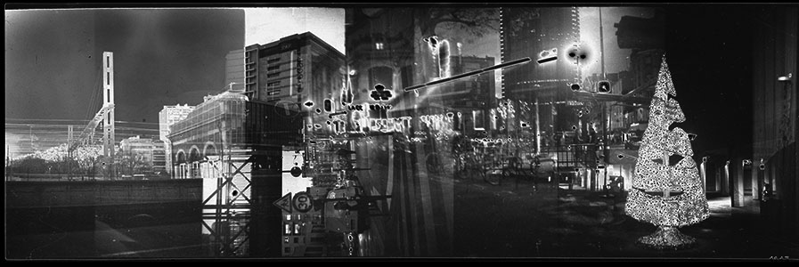
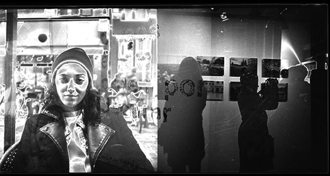

Superimposing is taking several shots on the same quarter of film. This way, you can capture a composition of pictures, lines, colours overimpressed on eachothers, creating a new complex frame. Using superimpose on faces or body shapes allows me to twist their shapes. The body becomes a drawing of successives lines I can distord, as I can modulate the faces, giving them a nearly monstrous shape. By capturing several shots of the same silhouette or face in movement, I tried to transfigure reality, to bring this reality to a more dreamlike dimension.
In addition to faces and silhouettes, our environment can also take on a new dimension, from garbage cans that turn into trees to station rails that pile up on crowded streets. The superimposition spreads like wildfire over the world, sometimes adding fantasy, sometimes more challenges. Moreover, superimposition goes in tandem with the medium, the silver film. The light and the colours are added to the sensitive surface, creating a real chemical chain. Accordingly, the colours, lines and lights that will stand out the most depend on two factors: the film formula chosen and the lens used. Thus, the Kodak Gold with its less saturated and globally more yellow tones will give a warmer but also more distant halo, as frozen in the past. At the opposite, the Fujifilm Superia Xtra revives magenta and green and offers more contrast: the atmosphere becomes more frightening and almost foreshadowing an uncertain future. an uncertain future.
For black and white, the line is the most important. Thus, what is photographed must be seen as a pattern and the superimposition becomes similar to a lithograph. I have been considering the 120 format in panorama as a continuity of lines. The gradually overlapping views tell a story only by their graphic features. Some elements are recognizable and others come to drown in this ocean of black and white to get a different appearance. Some views are taken in landscape format and others in portrait, also changing the angle of view, thus allowing to leave a reading by view and enter even more in this maze of scenes.